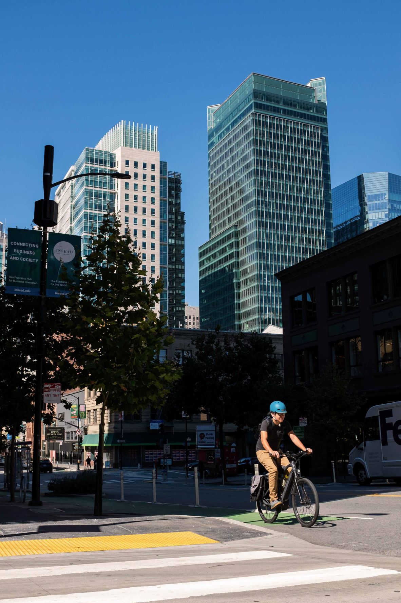
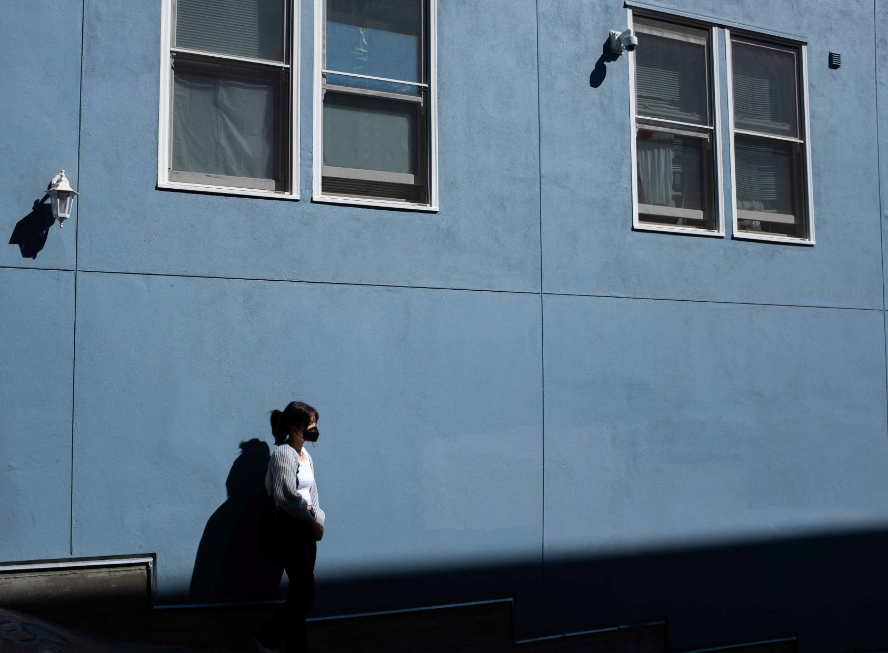
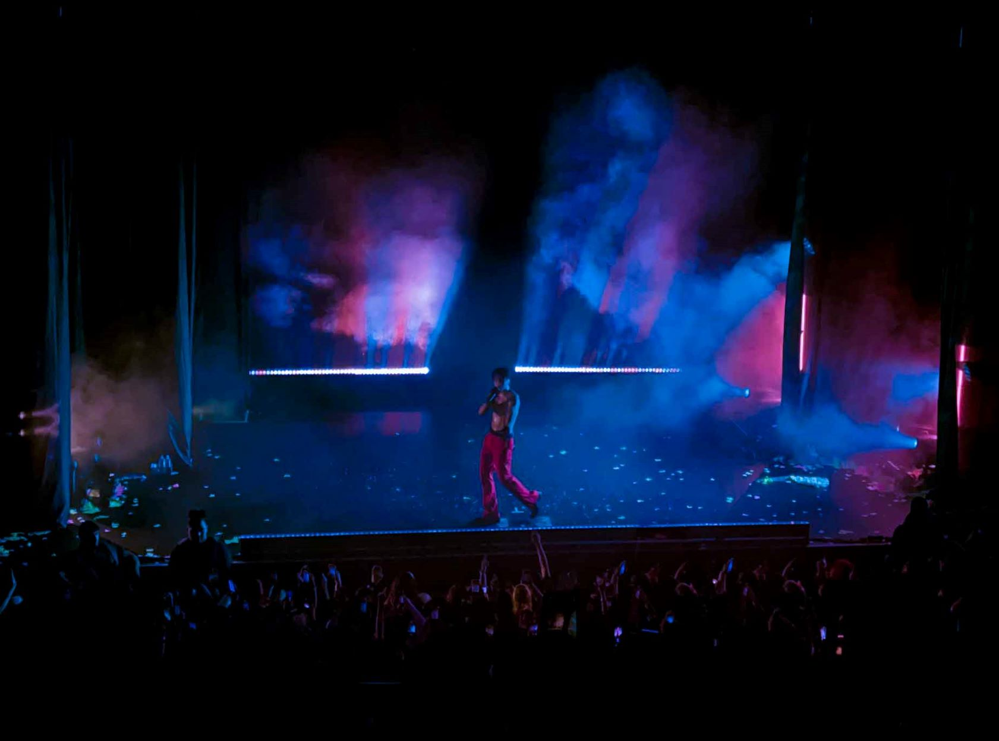
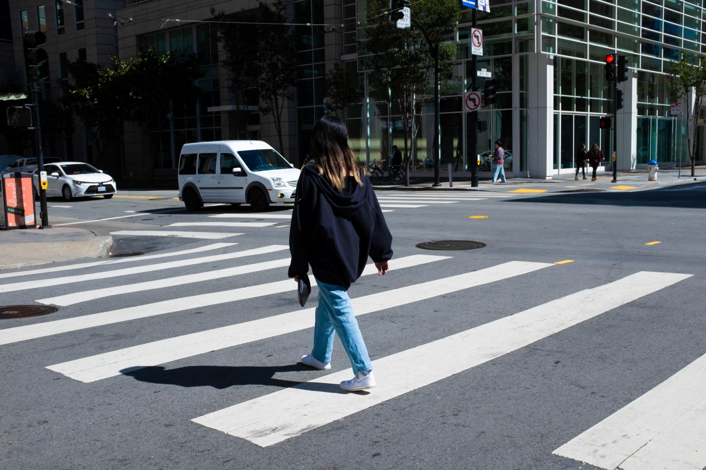
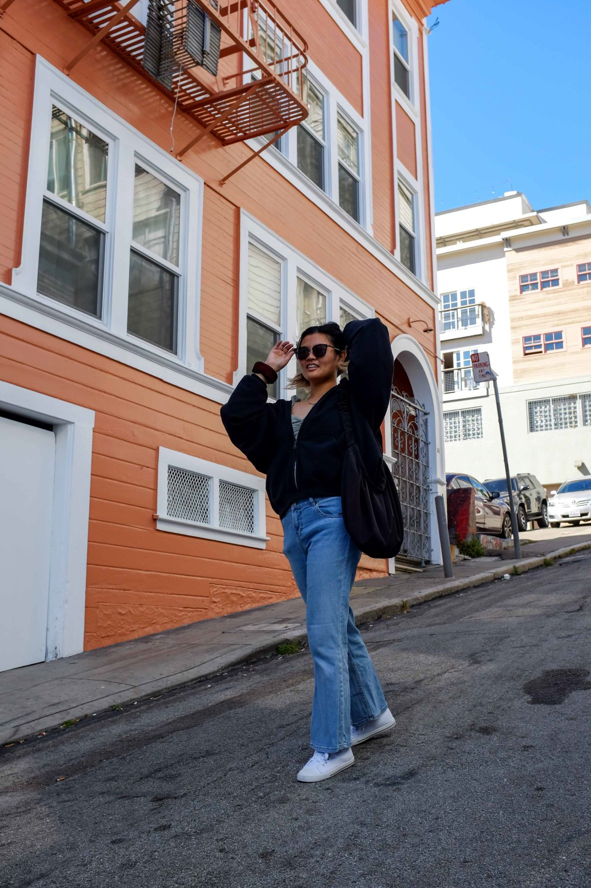
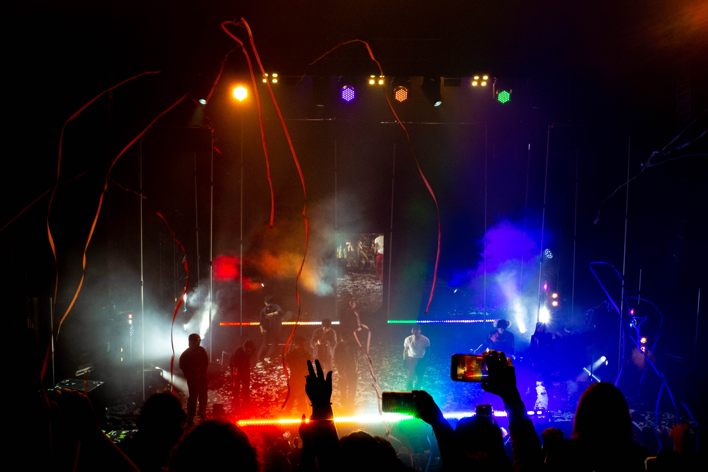
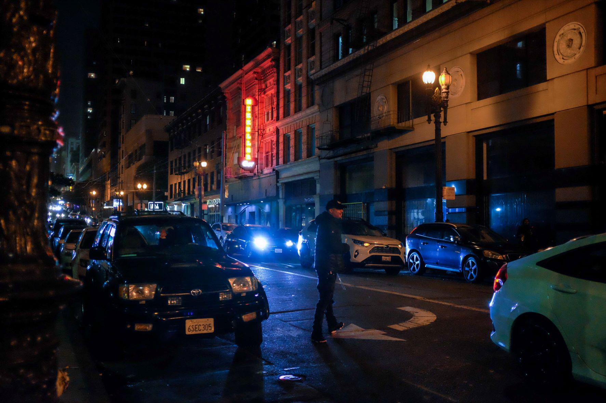
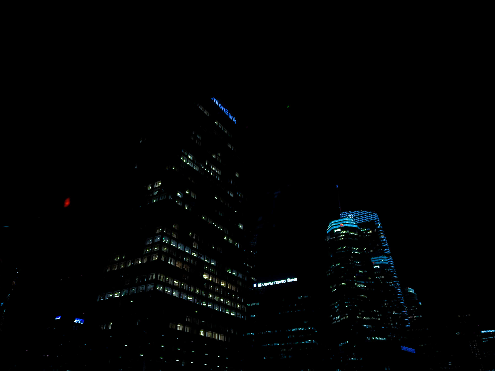
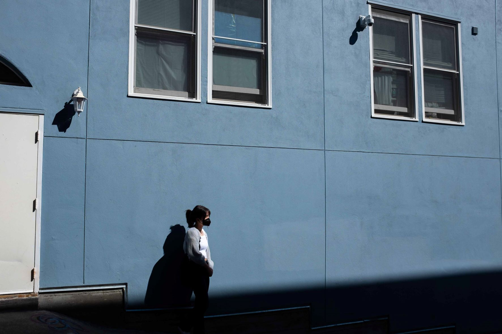
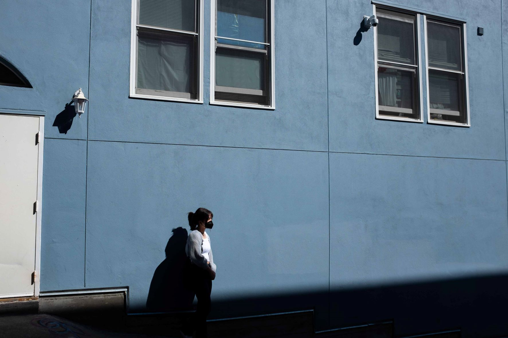

BIG CITY - KERO KERO BONITO

アスファルト、ビル・建物
”Asphalt, big buildings,”
I was kind of lonely at first
So I took life in my own hands
Got a haircut, joined a band And it turned out alright
I hit the street
Feeling good to be me
Get the look, paint the town I pick the spot I wanna get down
Everybody here's just passing through
The city never sleeps, 今夜もみんなどこに 行くの？
広がるよ、ネオンライト 町の光がたくさんの星に見える
“Neon lights fill the sky.”
“The lights of the town look like the stars of people’s homes”
 
